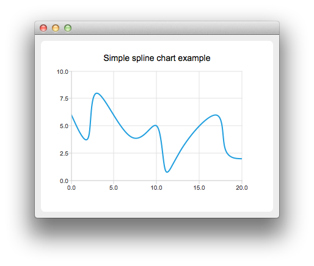

Creating Spline Charts

To create spline charts we need to put our data into QSplineSeries. QSplineSeries automatically calculates spline segment control points that are needed to properly draw the spline.
auto series = new QSplineSeries; series->setName("Spline");
Now let's add some data points to the series.
series->append(0, 6); series->append(2, 4); series->append(3, 8); series->append(7, 4); series->append(10, 5); *series << QPointF(11, 1) << QPointF(13, 3) << QPointF(17, 6) << QPointF(18, 3) << QPointF(20, 2);
The data series has been populated. To display it on a chart we create a QChart object and add the data series to it. We also set the title and the values range on the y-axis, so that our chart's visibility is better.
auto chart = new QChart; chart->legend()->hide(); chart->addSeries(series); chart->setTitle("Simple Spline Chart"); chart->createDefaultAxes(); chart->axes(Qt::Vertical).first()->setRange(0, 10);
Then we create a QChartView object with QChart as a parameter. This way we don't need to create a QGraphicsView scene ourselves.
createDefaultChartView(chart);